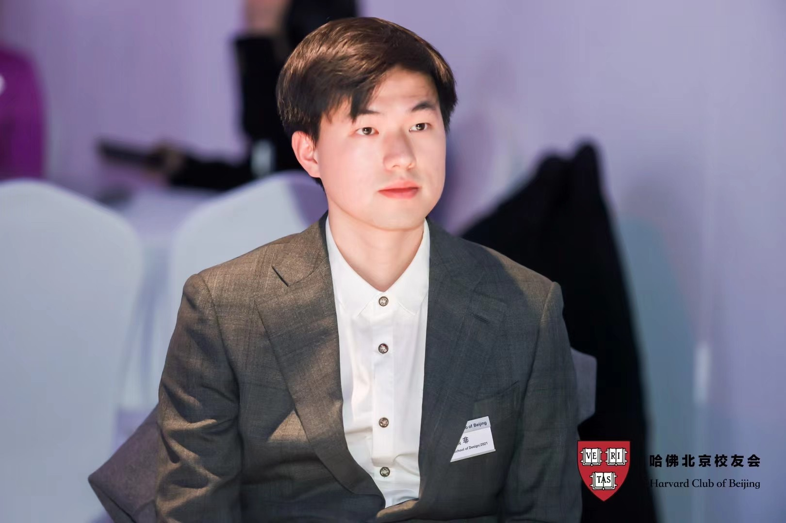
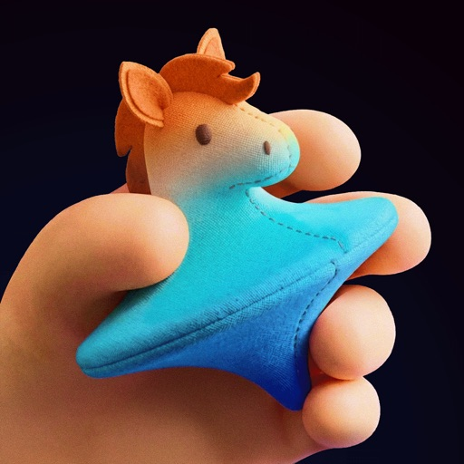
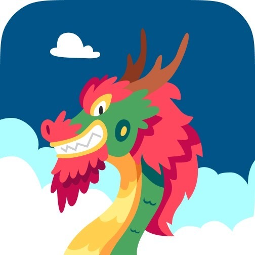

<meta charset="utf-8">
<title>熊非 FEI XIONG</title>
<style>
:root{
  --paper:#FAFCF9; --slab:#FFFFFF; --ink:#161715; --grey:#7c7f7a; --hair:#E6E8E3; --red:#E5352B;
  --water:#5E93A6; --waterpale:#DCEBEE;
  --sans:"Helvetica Neue",Helvetica,Arial,-apple-system,"PingFang SC","Microsoft YaHei",sans-serif;
  color-scheme:light;
}
*{box-sizing:border-box}
html,body{margin:0;background:var(--paper);color:var(--ink)}
body{font-family:var(--sans);-webkit-font-smoothing:antialiased}
a{color:inherit;text-decoration:none}
::selection{background:var(--red);color:#fff}
:focus-visible{outline:2px solid var(--red);outline-offset:2px}

nav{position:fixed;top:0;left:0;right:0;z-index:50;display:flex;align-items:center;justify-content:space-between;
  padding:14px 26px;background:rgba(250,252,249,.85);-webkit-backdrop-filter:blur(10px);backdrop-filter:blur(10px);
  border-bottom:1px solid var(--hair)}
nav .nm{font-size:13px;letter-spacing:.22em;font-weight:700}
nav .nm i{font-style:normal;color:var(--red)}
nav .lk{display:flex;gap:26px;font-size:12px;letter-spacing:.14em;color:var(--grey)}
nav .lk a:hover{color:var(--ink)}
nav .lk a{padding-bottom:4px;border-bottom:2px solid transparent;cursor:pointer}
nav .lk a.on{color:var(--ink);border-bottom-color:var(--water)}
nav .nm{cursor:pointer}

/* 连续滚动:html 边界轻吸,main=盖上来的纸片 */
html{scroll-snap-type:y proximity}

/* copy numbering badges: invisible on the real site, visible in edit mode.
   edit mode = the SAME page, only the badges + a hint pill appear on top */
em.no{display:none}
body.edit em.no{display:inline-block;font-style:normal;background:var(--water);color:#fff;
  font-size:10px;letter-spacing:.1em;padding:2px 7px;border-radius:3px;margin-right:9px;vertical-align:2px;font-weight:700;
  box-shadow:0 1px 4px rgba(24,34,32,.25)}
body.edit em.no.st{background:#A7ADA6}
.editpill{display:none}
body.edit .editpill{display:block;position:fixed;left:50%;bottom:14px;transform:translateX(-50%);z-index:90;
  background:var(--ink);color:#fff;font-size:11px;letter-spacing:.05em;line-height:1.7;
  padding:8px 18px;border-radius:99px;box-shadow:0 6px 24px rgba(24,34,32,.3);white-space:nowrap}
.editpill b{color:var(--waterpale);font-weight:700}
body.edit [data-field]{outline:1px dashed transparent;border-radius:2px;transition:outline-color .15s}
body.edit [data-field]:hover{outline-color:var(--water)}
body.edit [data-field]:focus{outline:1.5px solid var(--water);background:#fff}
body.edit [data-field].dirty{background:var(--waterpale)}
body.edit [data-row]{position:relative}
.delx{display:none;position:absolute;right:-4px;top:0;width:20px;height:20px;border-radius:50%;background:#fff;
  border:1px solid var(--hair);color:#B3372B;font-size:11px;line-height:18px;text-align:center;cursor:pointer;z-index:6}
body.edit [data-row]:hover .delx{display:block}
#btool{position:fixed;z-index:99;display:none;background:var(--ink);border-radius:6px;padding:2px;box-shadow:0 6px 18px rgba(24,34,32,.3)}
#btool button{all:unset;padding:4px 12px;cursor:pointer;font-weight:700;font-size:13px;color:#fff;font-family:var(--sans)}
#savebar{position:fixed;right:18px;bottom:18px;z-index:99;display:none;gap:10px;align-items:center}
body.edit #savebar{display:flex}
#savebtn{background:var(--water);color:#fff;border:none;border-radius:8px;padding:11px 22px;font-size:14px;font-weight:700;
  cursor:pointer;box-shadow:0 6px 20px rgba(24,34,32,.25);font-family:var(--sans)}
#savebtn:disabled{background:#B9C6CA;cursor:default}
#savemsg{font-size:12px;color:var(--ink);background:#fff;padding:7px 12px;border-radius:6px;border:1px solid var(--hair);display:none}

.hero{height:400vh;position:relative}
.pin{position:sticky;top:0;height:100vh;overflow:hidden;display:flex;align-items:center;justify-content:center;
  background:var(--paper);transition:opacity .35s linear}
#stage{position:absolute;inset:14px}
#stage canvas{position:absolute;inset:0;width:100%;height:100%}
.hint{position:absolute;left:50%;bottom:26px;transform:translateX(-50%);z-index:5;text-align:center;color:var(--grey);
  font-size:11px;letter-spacing:.3em}
.hint .ar{display:block;margin:12px auto 0;width:13px;height:13px;
  border-left:1.5px solid var(--ink);border-top:1.5px solid var(--ink);
  animation:rise 1.7s ease-in-out infinite}
@keyframes rise{0%,100%{transform:translateY(5px) rotate(45deg);opacity:.3}50%{transform:translateY(-3px) rotate(45deg);opacity:.9}}
.cnote{position:absolute;bottom:92px;z-index:5;font-style:italic;color:var(--grey);
  font-size:11px;line-height:1.8;letter-spacing:.05em;text-align:center;pointer-events:none}
.cnote .t1{font-size:10.5px;letter-spacing:.24em;color:#84887F;font-style:italic}
.cnote.l{left:4%;width:50%}
.cnote.r{left:57%;width:32%}
}

#caps{position:absolute;inset:0;pointer-events:none;z-index:6}
.cap{position:absolute;left:clamp(22px,5.5vw,84px);bottom:clamp(96px,17vh,180px);max-width:min(34vw,350px);
  opacity:0;transform:translateY(12px);will-change:opacity,transform}
.cap i{display:block;font-style:normal;color:var(--water);font-size:11px;letter-spacing:.34em;margin-bottom:10px}
.cap b{display:block;font-weight:700;font-size:clamp(19px,2.1vw,25px);line-height:1.6;letter-spacing:.04em}
.cap b small{display:block;font-weight:400;font-size:13px;color:var(--grey);margin-top:10px;letter-spacing:.06em}
@media (max-width:760px){
  .cap{left:24px;right:24px;max-width:none;bottom:92px}
  .cap b{font-size:17px}
}
.cap.hnote{left:auto;right:clamp(22px,5.5vw,84px);bottom:clamp(70px,13vh,150px);max-width:min(30vw,330px)}
.cap.hnote b{font-size:12.5px;font-weight:400;color:var(--grey);line-height:1.95;letter-spacing:.05em}
@media (max-width:760px){.cap.hnote{display:none}}

main{position:relative;z-index:5;background:var(--paper);padding:26px 0 60px;
  border-radius:26px 26px 0 0;box-shadow:0 -18px 60px rgba(24,34,32,.10);scroll-snap-align:start;scroll-snap-stop:always;
  margin-top:-100vh}                         /* 上叠 100vh:盖住 pin 里冻结的双塔 */
.sec{max-width:940px;margin:72px auto 0;padding:64px clamp(22px,4vw,40px) 0;border-top:1px solid var(--hair)}
.sh{display:flex;align-items:baseline;gap:16px;border-bottom:2px solid var(--ink);padding-bottom:14px}
.sh .t{color:var(--ink);font-weight:700;font-size:20px;letter-spacing:.02em}
.sh .e{color:var(--water);font-size:11px;letter-spacing:.34em}
/* 关于我:头像 + 第一人称简介 + 联系方式(Andrej 式页头) */
.about{max-width:940px;margin:96px auto 0;padding:0 clamp(22px,4vw,40px);
  display:flex;gap:34px;align-items:flex-start}
.avatar{flex:0 0 192px;width:192px;height:192px;border-radius:26px;background:var(--red);
  display:flex;align-items:center;justify-content:center;color:#fff;
  font-size:30px;font-weight:700;letter-spacing:.12em;line-height:1.25;text-align:center;
  writing-mode:vertical-rl;user-select:none}
.about .who{min-width:0}
.about h2{margin:2px 0 10px;font-size:22px;letter-spacing:.06em}
.about h2 small{font-weight:400;font-size:12px;color:var(--grey);letter-spacing:.3em;margin-left:12px}
.about .bio{font-size:14.5px;line-height:2.05;color:#3d403c;letter-spacing:.01em}
.about .bio p{margin:0 0 6px}
.about .links{margin-top:14px;font-size:12px;letter-spacing:.14em}
.about .links a{color:var(--water);margin-right:26px;border-bottom:1px solid var(--waterpale);padding-bottom:2px}
.about .links a:hover{border-bottom-color:var(--water)}
.about .links .plain{color:var(--grey);margin-right:26px}
img.avatar,.avatar.pic{object-fit:cover;padding:0;background:var(--hair)}
@media (max-width:680px){
  .about{flex-direction:column;gap:20px}
  .avatar{flex-basis:auto;width:152px;height:152px;font-size:24px;border-radius:20px}
}

/* 经历:左=时间轴(年份+水青节点+竖线),右=经历条目;紧凑单列 */
.tl3{position:relative;margin-top:0}
.tl3::before{content:"";position:absolute;left:112px;top:8px;bottom:8px;width:1px;background:var(--hair)}
.te{display:grid;grid-template-columns:90px 44px 100px 1fr;margin-bottom:26px;align-items:center}
.te:last-child{margin-bottom:0}
.te .yr{text-align:right;font-size:12px;color:var(--grey);letter-spacing:.04em;white-space:nowrap;font-variant-numeric:tabular-nums}
.te .dot{position:relative}
.te .dot::after{content:"";position:absolute;left:50%;top:50%;width:7px;height:7px;border-radius:50%;
  background:var(--water);transform:translate(-50%,-50%);box-shadow:0 0 0 3px var(--paper)}
.te .lg{padding-top:1px}
.tlogo{width:80px;height:80px;border-radius:16px;object-fit:contain;background:#fff;
  border:1px solid var(--hair);padding:8px;display:block}
.tlogo.ph{display:flex;align-items:center;justify-content:center;padding:0;background:var(--paper);
  color:#B9BEB8;font-weight:700;font-size:26px;font-style:normal}
.te .tx{min-width:0}
.te h4{margin:0;font-size:15.5px;font-weight:700;letter-spacing:.01em}
.te .tag{font-style:normal;font-weight:400;font-size:10.5px;color:var(--grey);letter-spacing:.22em;margin-left:10px}
.te p{margin:4px 0 0;font-size:13.5px;color:#494C47;line-height:1.85;letter-spacing:.01em}
.te p a{color:var(--water);border-bottom:1px solid var(--waterpale)}
@media (max-width:680px){
  .tl3::before{left:86px}
  .te{grid-template-columns:66px 40px 80px 1fr;margin-bottom:22px}
  .tlogo{width:64px;height:64px;border-radius:13px}
}
/* 简单列表(Sparks 等):日期 + 一行 */
.sp{display:flex;gap:18px;align-items:baseline;padding:12px 2px;border-bottom:1px solid var(--hair);font-size:14px;line-height:1.9}
.sp .d{flex:0 0 88px;font-size:12px;color:var(--grey);letter-spacing:.05em}
.sp b{font-weight:600}
.contact .mail{display:inline-block;font-size:clamp(26px,5vw,46px);font-weight:700;letter-spacing:.01em;margin:34px 0 20px;border-bottom:3px solid var(--ink)}
.contact .mail:hover{color:var(--water);border-color:var(--water)}
.chips{display:flex;gap:10px;flex-wrap:wrap;margin-top:8px}
.chip{border:1px solid var(--ink);padding:8px 16px;font-size:12px;letter-spacing:.12em}
.chip:hover{background:var(--ink);color:#fff;border-color:var(--ink)}
footer{max-width:1060px;margin:70px auto 0;padding:20px 26px 30px;border-top:none;
  display:flex;justify-content:space-between;gap:14px;font-size:11.5px;color:var(--ink);letter-spacing:.04em}
footer span:last-child{color:var(--grey)}

.intro{font-size:14.5px;color:var(--grey);line-height:1.9;max-width:62ch;margin:26px 0 6px}
.intro a{border-bottom:1px solid var(--hair)}
/* 作品:长条卡(左图右文) */
.wks{display:flex;flex-direction:column;gap:16px;margin-top:30px}
a.wk{display:flex;gap:24px;align-items:center;background:var(--slab);border:1px solid var(--hair);
  border-radius:14px;padding:16px;transition:border-color .2s, box-shadow .25s, transform .25s}
a.wk:hover{border-color:var(--water);box-shadow:0 12px 32px rgba(24,34,32,.09);transform:translateY(-2px)}
a.wk .wimg{flex:0 0 220px;height:132px;border-radius:9px;overflow:hidden;background:var(--paper);border:1px solid var(--hair)}
a.wk .wimg img{width:100%;height:100%;object-fit:cover;display:block}
a.wk .wph{display:flex;width:100%;height:100%;align-items:center;justify-content:center;color:#B9BEB8;font-weight:700;font-size:30px}
a.wk .wtx{min-width:0;display:flex;flex-direction:column;padding-right:8px}
a.wk .wt{font-size:16.5px;font-weight:700;letter-spacing:.01em;transition:color .2s}
a.wk:hover .wt{color:var(--water)}
a.wk .wd{margin-top:6px;font-size:13.5px;line-height:1.85;color:#585B56}
a.wk .wsrc{margin-top:9px;font-size:11.5px;letter-spacing:.12em;color:var(--water)}
@media (max-width:680px){
  a.wk{flex-direction:column;align-items:stretch;gap:12px}
  a.wk .wimg{flex:none;width:100%;height:170px}
}

/* 文章卡片:双列网格(Lil'Log 式) */
.posts{display:grid;grid-template-columns:1fr 1fr;gap:18px;margin-top:30px}
@media (max-width:760px){.posts{grid-template-columns:1fr}}
a.post{display:flex;flex-direction:column;background:var(--slab);border:1px solid var(--hair);border-radius:14px;
  padding:24px 26px 22px;
  transition:border-color .2s, box-shadow .25s, transform .25s}
a.post:hover{border-color:var(--water);box-shadow:0 12px 32px rgba(24,34,32,.09);transform:translateY(-2px)}
a.post:hover .pt{color:var(--water)}
a.post .pt{font-size:17px;font-weight:700;letter-spacing:.01em;line-height:1.55;transition:color .2s}
a.post .meta{display:block;margin-top:7px;font-size:11.5px;color:var(--grey);letter-spacing:.09em;font-variant-numeric:tabular-nums}
a.post .ex{display:-webkit-box;-webkit-line-clamp:3;-webkit-box-orient:vertical;overflow:hidden;
  margin-top:11px;font-size:13px;line-height:1.85;color:#5F625D}
.body p,.mono-body p{font-size:14.5px;line-height:1.95;color:#333;margin:0 0 14px}
.body ol,.body ul,.mono-body ol,.mono-body ul{font-size:14.5px;line-height:1.9;color:#333;padding-left:22px;margin:0 0 14px}
.body li,.mono-body li{margin-bottom:6px}
.body blockquote,.mono-body blockquote{border-left:3px solid var(--water);padding:8px 0 8px 16px;margin:0 0 14px;color:var(--ink);font-size:14.5px;line-height:1.9;background:var(--waterpale)}
.body hr,.mono-body hr{border:0;border-top:1px solid var(--hair);margin:22px 0}
.body b,.mono-body b{font-weight:700}
.ph{font-size:12px;color:#b9b9b4;letter-spacing:.06em}
.body a,.mono-body a,.ans a{color:var(--ink);border-bottom:1px solid var(--water)}
.subhead{display:flex;align-items:baseline;gap:14px;margin:64px 0 8px;border-bottom:1px solid var(--ink);padding-bottom:12px}
.subhead .t{font-weight:700;font-size:16px;letter-spacing:.04em}
.subhead .e{color:var(--grey);font-size:10.5px;letter-spacing:.3em}
.mono-body{max-width:72ch;padding-top:14px}
details.qa{border-bottom:1px solid var(--hair)}
details.qa summary{display:flex;gap:14px;align-items:baseline;padding:16px 2px;cursor:pointer;list-style:none;
  font-size:15px;font-weight:600;line-height:1.6;transition:padding-left .3s}
details.qa summary::-webkit-details-marker{display:none}
details.qa summary:hover{padding-left:12px;color:var(--water)}
details.qa[open] summary{color:var(--water)}
details.qa .qm{font-size:11px;color:var(--water);letter-spacing:.08em;font-weight:700;white-space:nowrap}
details.qa .ans{padding:0 2px 24px 38px;max-width:70ch}
details.qa .ans p{font-size:14.5px;line-height:1.95;color:#333;margin:0 0 12px}

@media (prefers-reduced-motion:reduce){ .hint .ar::after{animation:none} }
@media (max-width:640px){
  nav{padding:12px 16px}
  .rw{grid-template-columns:78px 1fr} .rw .c{display:none}
  .wrapv{width:96vw}
}
</style>

<nav>
  <span class="nm" id="logo">熊非 <i>/</i> FEI XIONG</span>
</nav>

<header class="hero" id="hero">
  <div class="pin" id="pin">
    <div id="stage"></div>
    <div id="caps"></div>
    <div class="hint" id="hint"><em class="no">G2</em><span data-no="G2" data-field="正文">继续向下滚动</span><span class="ar"></span></div>
    <div class="cnote l" data-no="H7" data-field="正文"><span class="t1"><em class="no">H7</em>ECOLOGICAL DIS-INTEGRATION</span><br>Water Treatment Plant Design: An Ecological Mode for Singapore, Fei Xiong Portfolio</div>
    <div class="cnote r" data-no="H8" data-field="正文"><span class="t1"><em class="no">H8</em>THE TRANSFORMER</span><br>Decoder-only Vision-Language Model: From Image Patches to Next Token, after Vaswani 2017 & Fuyu 2023</div>
  </div>
</header>

<main>
  <div class="about" id="sec-about">
    <em class="no">A1</em>
    <div class="who">
      <div class="bio" data-no="P1" data-field="正文"><em class="no">P1</em><p>我是熊非，<b>同济建筑学士学位</b>，<b>Harvard 21'（MDes RR首个大陆录取本科生）</b>。曾任<b>豆包多模态产品负责人</b>（包括图片/视频理解，实时视频通话，computer use）；<b>即梦founding PM</b>；连续创业者，曾悉空科技COO（Spatial Intelligence）、曾画龙CEO（物理世界定制AI）。</p><p>2019在Harvard和MIT开始我的Computer Vision旅程，而后我致力于打造<b>以视觉为统一接口的交互新范式</b>，以及<b>下一代视觉交互的前沿模型</b>。我相信模型作为新质生产力，下一代的生产关系会围绕模型展开，最强的学习信号会来自产品落地和部署环境，有竞争力的组织会从这样的新生产力和生产关系长出来。我希望建立这样的组织，也希望认识更多有趣的朋友。</p></div>
      <div class="links"><a href="mailto:fei.w.xiong@outlook.com"><em class="no">A4</em>EMAIL</a><a href="https://www.xiaoyuzhoufm.com/podcast/6885f49a7c043891439ecf96" target="_blank" rel="noopener"><em class="no">A5</em>小宇宙 · FUNDAMENTALS: AI ↗</a><span class="plain"><em class="no">A6</em>微信 · wowolpert</span></div>
    </div>
  </div>

  <section class="sec" id="sec-exp">
    <div class="tl3"><div class="te" data-row="E1"><span class="yr">2026 —</span><span class="dot"></span><span class="lg"></span><div class="tx"><h4 data-no="E1" data-field="标题"><em class="no">E1</em>豆包，Computer Use Agent负责人</h4><p data-no="E1" data-field="正文">我负责豆包CUA的产品，新增【办公任务】大入口，设计GUI/非GUI混合策略，本地优先</p></div></div><div class="te" data-row="E2"><span class="yr">2024 — 25</span><span class="dot"></span><span class="lg"></span><div class="tx"><h4 data-no="E2" data-field="标题"><em class="no">E2</em>豆包 ，VLM多模态交互负责人</h4><p data-no="E2" data-field="正文">我从零打造豆包图片理解，长视频理解，视频实时通话等功能入口；贡献X千万DAU</p></div></div><div class="te" data-row="E3"><span class="yr">2023 — 24</span><span class="dot"></span><span class="lg"></span><div class="tx"><h4 data-no="E3" data-field="标题"><em class="no">E3</em>剪映，Smart Edit</h4><p data-no="E3" data-field="正文">我打造了业界首个Agent创作产品Smart Edit，后改名为小云雀/剪小映</p></div></div><div class="te" data-row="E6"><span class="yr">2023</span><span class="dot"></span><span class="lg"></span><div class="tx"><h4 data-no="E6" data-field="标题"><em class="no">E6</em>画龙 LongAI · 创始人 / CEO</h4><p data-no="E6" data-field="正文">我打造了一个物理世界的 AI 私人定制设计平台，基于POD，让普通人设计定制，支持500+ SKU</p></div></div><div class="te" data-row="E4"><span class="yr">2021 — 23</span><span class="dot"></span><span class="lg"></span><div class="tx"><h4 data-no="E4" data-field="标题"><em class="no">E4</em>龙湖集团 · CV 产品负责人</h4><p data-no="E4" data-field="正文">我负责在全球1000+自持物理空间，大规模边缘部署算力，涵盖住宅/售楼处/购物中心/后勤等</p></div></div><div class="te" data-row="E7"><span class="yr">2020 — 21</span><span class="dot"></span><span class="lg"></span><div class="tx"><h4 data-no="E7" data-field="标题"><em class="no">E7</em>深空科技 PlaceInt · 联合创始人 / COO</h4><p data-no="E7" data-field="正文">我基于CV的空间智能，用端侧算力捕捉人群行为。服务20+大型空间，1000+摄像头，45 万㎡；团队有多篇NeurIPS / IEEE；客户包括香港置地、富力、合生创展</p></div></div><div class="te" data-row="E11"><span class="yr">2019 — 21</span><span class="dot"></span><span class="lg"></span><div class="tx"><h4 data-no="E11" data-field="标题"><em class="no">E11</em>MIT · CSAIL/Media Lab</h4><p data-no="E11" data-field="正文">Cross Registration，主要为Course 6系列（CS,ML) 和Computer Vision系列</p></div></div><div class="te" data-row="E8"><span class="yr">2019 — 21</span><span class="dot"></span><span class="lg"></span><div class="tx"><h4 data-no="E8" data-field="标题"><em class="no">E8</em>Harvard GSD</h4><p data-no="E8" data-field="正文">GSD Mdes RR专业，第一个录取大陆本科生。MIT联合培养</p></div></div><div class="te" data-row="E12"><span class="yr">2015</span><span class="dot"></span><span class="lg"></span><div class="tx"><h4 data-no="E12" data-field="标题"><em class="no">E12</em>NUS CDE</h4><p data-no="E12" data-field="正文">新加坡国立大学交换半年，方向：建筑技术</p></div></div><div class="te" data-row="E9"><span class="yr">2013 — 18</span><span class="dot"></span><span class="lg"></span><div class="tx"><h4 data-no="E9" data-field="标题"><em class="no">E9</em>同济大学 · 建筑学 B.Arch</h4><p data-no="E9" data-field="正文">建筑设计专业</p></div></div></div>
  </section>

  <section class="sec" id="sec-works">
    <div class="wks"><a class="wk" data-row="W1" href="https://mp.weixin.qq.com/s/Sb-NMXTrWFQES1EDO_Gr2g" target="_blank" rel="noopener"><span class="wimg"></span><span class="wtx"><span class="wt" data-no="W1" data-field="标题"><em class="no">W1</em>豆包 · Computer Use</span><span class="wd" data-no="W1" data-field="正文">增加办公任务大入口，设计GUI/非GUI混合执行策略，本地优先。</span><span class="wsrc">微信推文 ↗</span></span></a><a class="wk" data-row="W2" href="https://mp.weixin.qq.com/s/rBxtMVPZ-JEx4yQX0plydA" target="_blank" rel="noopener"><span class="wimg"></span><span class="wtx"><span class="wt" data-no="W2" data-field="标题"><em class="no">W2</em>豆包 · 图片理解</span><span class="wd" data-no="W2" data-field="正文">从零构建豆包的视觉能力，增加图片/相册入口，从 0 到千万级 DAU。</span><span class="wsrc">微信推文 ↗</span></span></a><a class="wk" data-row="W3" href="https://mp.weixin.qq.com/s/yYoOj6PT_lct82RNmwL-Tg" target="_blank" rel="noopener"><span class="wimg"></span><span class="wtx"><span class="wt" data-no="W3" data-field="标题"><em class="no">W3</em>豆包 · 视频通话</span><span class="wd" data-no="W3" data-field="正文">实时交互视频通话，豆包评穿搭/看小孩写作业等传播度广，边看边聊的多模态交互。</span><span class="wsrc">微信推文 ↗</span></span></a><a class="wk" data-row="W4" href="https://my.feishu.cn/docx/Kf8ndljY6omTGLxWr9HcT2nAnGk" target="_blank" rel="noopener"><span class="wimg"></span><span class="wtx"><span class="wt" data-no="W4" data-field="标题"><em class="no">W4</em>Bear 的本质学</span><span class="wd" data-no="W4" data-field="正文">用第一性原理拆解世界的长期专栏。</span><span class="wsrc">飞书文档 ↗</span></span></a><a class="wk" data-row="W5" href="https://my.feishu.cn/wiki/Waxhw1kqIia2sRkvMlnckzIznpd" target="_blank" rel="noopener"><span class="wimg"></span><span class="wtx"><span class="wt" data-no="W5" data-field="标题"><em class="no">W5</em>Fundamentals: AI 播客</span><span class="wd" data-no="W5" data-field="正文">全自动生产的 AI 播客：海外长文→双角色逐字稿→TTS→自动上架小宇宙，每天更新。</span><span class="wsrc">飞书文档 ↗</span></span></a><a class="wk" data-row="W6" href="https://mp.weixin.qq.com/s/ljIyBHBV_pFjXXQcgoNmtA" target="_blank" rel="noopener"><span class="wimg"></span><span class="wtx"><span class="wt" data-no="W6" data-field="标题"><em class="no">W6</em>画龙 LongAI</span><span class="wd" data-no="W6" data-field="正文">物理世界的 AI 私人定制设计平台，让普通人用AI创造品牌。</span><span class="wsrc">微信推文 ↗</span></span></a><a class="wk" data-row="W7" href="https://mp.weixin.qq.com/s/nd9qsXxZGPz5Sv-iGe9RYA" target="_blank" rel="noopener"><span class="wimg"></span><span class="wtx"><span class="wt" data-no="W7" data-field="标题"><em class="no">W7</em>Place.Int 深空科技</span><span class="wd" data-no="W7" data-field="正文">基于计算机视觉的大型空间人群分析引擎，1000+ 摄像头规模落地。</span><span class="wsrc">微信推文 ↗</span></span></a></div>
  </section>

  <footer><span><em class="no">G3</em>Fei Xiong | fei.w.xiong@outlook.com</span><span><em class="no">G4</em></span></footer>
</main>

<script>
(function(){
var FRAMES=["frames/g_01.webp", "frames/g_02.webp", "frames/g_03.webp", "frames/g_04.webp", "frames/g_05.webp", "frames/g_06.webp", "frames/g_07.webp", "frames/g_08.webp", "frames/g_09.webp", "frames/g_10.webp", "frames/g_11.webp", "frames/g_12.webp", "frames/g_13.webp", "frames/g_14.webp", "frames/g_15.webp", "frames/g_16.webp", "frames/g_17.webp", "frames/g_18.webp", "frames/g_19.webp", "frames/g_20.webp", "frames/g_21.webp", "frames/g_22.webp", "frames/g_23.webp", "frames/g_24.webp", "frames/g_25.webp", "frames/g_26.webp", "frames/g_27.webp", "frames/g_28.webp", "frames/g_29.webp", "frames/g_30.webp", "frames/g_31.webp", "frames/g_32.webp", "frames/g_33.webp"];
var hero=document.getElementById('hero');
var stage=document.getElementById('stage'), hint=document.getElementById('hint');
var reduce=matchMedia('(prefers-reduced-motion: reduce)').matches;
var PVM=location.hash.match(/pv=(\d+(?:\.\d+)?)/), PV=PVM?Math.min(100,+PVM[1])/100:null;
var PAPER='#FAFCF9';

var cv=document.createElement('canvas'), cx=cv.getContext('2d',{alpha:false});
stage.appendChild(cv);
var W=0,H=0;
function size(){
  var dpr=Math.min(1.75,devicePixelRatio||1); /* 1.75:大屏清晰度与开销的平衡点 */
  var r=stage.getBoundingClientRect();
  W=Math.max(1,Math.round(r.width*dpr)); H=Math.max(1,Math.round(r.height*dpr));
  cv.width=W; cv.height=H;
  cx.imageSmoothingEnabled=true;
  try{cx.imageSmoothingQuality='high';}catch(e){}
  cx.fillStyle=PAPER; cx.fillRect(0,0,W,H);
}
size();

/* frames: encoded Images always in memory; decoded ImageBitmaps only in a
   sliding window around the playhead (33 x 1920^2 decoded = ~0.5GB, too much) */
var N=FRAMES.length;
/* no  elements: data-URLs -> Blobs (9MB compressed), decoded to
   display-sized ImageBitmaps entirely off the main thread. Chrome's own
   image cache never sees a full-res frame this way. */
var blobs=new Array(N), bmp=new Array(N), pending=new Array(N), inflight=0, everBmp=false;
/* 取帧:就绪即重绘(决不等滚动);外置模式下首帧优先,不被其余 30 帧抢带宽 */
var _c={r:0,en:0,pass:0,t:0,d:0,rp:0};
var kicked=new Array(N);
function kick(i){
  if(i<0||i>=N||kicked[i]||blobs[i]||!FRAMES[i]) return;
  kicked[i]=true;
  fetch(FRAMES[i]).then(function(r){ if(!r.ok) throw 0; return r.blob(); }).then(function(bl){
    blobs[i]=bl; FRAMES[i]=null;
    repaint();
  }).catch(function(){ kicked[i]=false; });
}
kick(0); kick(1); kick(2);
var rested=false;
function restOnce(){ if(rested) return; rested=true; for(var i=3;i<N;i++) kick(i); }
var w0=setInterval(function(){ if(blobs[0]){ clearInterval(w0); restOnce(); } },100);
setTimeout(restOnce,2500);
self.__dbg=function(){ return {blobs:blobs.filter(Boolean).length, bmp:bmp.filter(Boolean).length,
  kicked:kicked.filter(Boolean).length, pend:pending.filter(Boolean).length, infl:inflight,
  c:_c, W:W, H:H, raf:!!raf}; };
function legacy(i,done){
  var im=new Image();
  im.onload=function(){ var u=im.src; done(im); URL.revokeObjectURL(u); };
  im.src=URL.createObjectURL(blobs[i]);
}
/* decode discipline: <=2 decodes in flight, decode at display size, frames
   skipped during a fast fling are never decoded at all */
function ensure(i){
  _c.en++;
  if(i<0||i>=N||bmp[i]||pending[i]||inflight>=2) return;
  if(!blobs[i]){ kick(i); return; }           /* 未取到的帧按需补取(含失败重试) */
  pending[i]=true; inflight++; _c.pass++;
  var done=function(b){ _c.d++; bmp[i]=b; if(b) everBmp=true; pending[i]=false; inflight--; repaint(); };
  if(!self.createImageBitmap){ legacy(i,done); return; }
  var side=Math.min(Math.round(Math.min(W,H)*1.05),2048);
  var pr=null;
  try{ pr=createImageBitmap(blobs[i],{resizeWidth:side,resizeHeight:side,resizeQuality:'high'}); }
  catch(e){}
  if(!pr){ legacy(i,done); return; }
  pr.then(done, function(){
    createImageBitmap(blobs[i]).then(done, function(){ legacy(i,done); });
  });
}
function sweep(c){
  for(var k=0;k<N;k++){
    if(bmp[k] && Math.abs(k-c)>4){ if(bmp[k].close) bmp[k].close(); bmp[k]=null; }
  }
}
hero.style.height='400vh';           /* 240vh 擦洗 + 60vh 终态停留 + 100vh 贴片覆盖段 */

var cur=0, target=0, raf=null;
function prog(){
  /* p=1 之后:先 0.6 屏"终态停留"(什么都不动,可驻足),再 1 屏纸片覆盖 */
  var vh=innerHeight, max=hero.offsetHeight-vh*2.6;
  return Math.min(1,Math.max(0,scrollY/(max||1)));
}
/* ==== bbycroft 风格 v2:张量格胞 + 结构分组 + token 光柱 + 旋转拆解 ==== */
var INK='#161715', HAIR='#E6E8E3', WATER='#5E93A6', WPALE='#DCEBEE', GREY='#7c7f7a';
function tint(ix,iz,base){                    /* 确定性伪随机权重胞着色 */
  var v=Math.sin(ix*12.9898+iz*78.233)*43758.5453;
  v=v-Math.floor(v);
  return 'rgba(94,147,166,'+(base+v*0.30).toFixed(3)+')';
}
function drawTF(rx,ry,rw,rh,p){
  var e=p*p*(3-2*p);
  var phi=(8+24*e)*Math.PI/180, c=Math.cos(phi), sn=Math.sin(phi);
  var HW=1.0, HD=0.60;
  /* ---- 结构清单(自底向上);g=组内小间隙,G=组间大间隙 ---- */
  var L=[
    {k:'tok',  h:0.075,t:'IMAGE PATCHES',     G:1},
    {k:'emb',  h:0.22, t:'PATCH EMBEDDING',   G:1},
    {k:'pos',  h:0.055,t:'POSITIONAL ENCODING',G:1.6}
  ];
  for(var li=0;li<2;li++){
    L.push({k:'ln',  h:0.035,t:li===0?'LAYERNORM':'', G:0.4});
    L.push({k:'qkv', h:0.085,t:li===0?'Q \u00b7 K \u00b7 V PROJECTIONS':'', G:0.4});
    L.push({k:'am',  h:0.045,t:li===0?'MULTI-HEAD ATTENTION':'ATTENTION \u00b7 LAYER 2', G:0.4, heads:true});
    L.push({k:'proj',h:0.06, t:li===0?'OUTPUT PROJECTION':'', G:0.4});
    L.push({k:'ln',  h:0.035,t:'', G:0.4});
    L.push({k:'mlpu',h:0.10, t:li===0?'MLP \u00b7 4\u00d7 EXPAND':'MLP \u00b7 LAYER 2', G:0.35});
    L.push({k:'mlpd',h:0.08, t:li===0?'MLP \u00b7 PROJECT':'', G:1.6});
  }
  L.push({k:'ln',  h:0.035,t:'FINAL LAYERNORM', G:1});
  L.push({k:'head',h:0.16, t:'LM HEAD \u00b7 VOCAB', G:1});
  L.push({k:'soft',h:0.09, t:'SOFTMAX', G:1});
  L.push({k:'out', h:0.09, t:'NEXT TOKEN', G:1});
  var gapU=(0.010+0.115*e);
  var totU=0, i;
  for(i=0;i<L.length;i++){ totU+=L[i].h; if(i<L.length-1) totU+=gapU*L[i].G; }
  var projW=2*(HW*c+HD*sn), projTop=(HW*sn+HD*c);
  var sc=Math.min(rw*0.52/projW, rh*0.94/(totU+projTop*0.55+0.08));
  var cx0=rx+rw*0.38, cy0=ry+rh/2+totU*sc/2;
  function P(x,y,z){
    var X=x*c+z*sn, Z=-x*sn+z*c;
    return [cx0+X*sc, cy0-y*sc+Z*sc*0.5];
  }
  function quad(a,b,cq,d,fill,stroke,dash){
    cx.beginPath(); cx.moveTo(a[0],a[1]); cx.lineTo(b[0],b[1]);
    cx.lineTo(cq[0],cq[1]); cx.lineTo(d[0],d[1]); cx.closePath();
    if(fill){ cx.fillStyle=fill; cx.fill(); }
    if(stroke){ if(dash)cx.setLineDash(dash); cx.strokeStyle=stroke; cx.stroke(); if(dash)cx.setLineDash([]); }
  }
  function box3(x0,x1,y0,y1,z0,z1,st){
    quad(P(x0,y0,z1),P(x1,y0,z1),P(x1,y1,z1),P(x0,y1,z1), st.front, st.stroke, st.dash);
    quad(P(x1,y0,z0),P(x1,y0,z1),P(x1,y1,z1),P(x1,y1,z0), st.right, st.stroke, st.dash);
    quad(P(x0,y1,z0),P(x1,y1,z0),P(x1,y1,z1),P(x0,y1,z1), st.top,   st.stroke, st.dash);
  }
  function cells(x0,x1,z0,z1,y,nx,nz,base){    /* 顶面权重格胞 */
    var dx=(x1-x0)/nx, dz=(z1-z0)/nz;
    for(var gx=0;gx<nx;gx++)for(var gz=0;gz<nz;gz++){
      var ax=x0+gx*dx, az=z0+gz*dz;
      quad(P(ax,y,az),P(ax+dx*0.88,y,az),P(ax+dx*0.88,y,az+dz*0.85),P(ax,y,az+dz*0.85), tint(gx,gz,base), null);
    }
  }
  var ST_W={top:'#F2F8F9',front:'#DFEDF0',right:'#D3E6EA',stroke:WATER};
  var ST_P={top:'#FFFFFF',front:'#F0F3EE',right:'#E8EBE5',stroke:'#3A3C38'};
  var ST_L={top:'#FBFDFB',front:'#EFF2ED',right:'#E7EAE4',stroke:'#9BA09A'};
  cx.save();
  cx.lineWidth=Math.max(0.7, sc*0.011);
  cx.font=(Math.max(9,sc*0.1))+'px "Helvetica Neue",Helvetica,Arial,sans-serif';
  try{cx.letterSpacing=(sc*0.018)+'px';}catch(err){}
  cx.textAlign='left'; cx.textBaseline='middle';
  var la=Math.max(0,Math.min(1,(e-0.10)/0.5));
  var yCur=0, headSpots=[], mlpupTop=null;
  var qkvY0s=[], projY1s=[], mlpuY0s=[], mlpdY1s=[];
  for(i=0;i<L.length;i++){
    var b=L[i], y0=yCur, y1=yCur+b.h;
    if(b.k==='ln'){ box3(-HW,HW,y0,y1,-HD,HD,ST_L); }
    else if(b.k==='tok'){
      box3(-HW,HW,y0,y1,-HD,HD,ST_P);
      for(var k2=0;k2<8;k2++){
        var tx0=-HW+2*HW*(k2+0.12)/8, tw2=2*HW*0.76/8;
        quad(P(tx0,y1,-HD*0.3),P(tx0+tw2,y1,-HD*0.3),P(tx0+tw2,y1,HD*0.3),P(tx0,y1,HD*0.3),
             k2===5?WATER:WPALE, WATER);
      }
    }
    else if(b.k==='emb'){
      box3(-HW,HW,y0,y1,-HD,HD,ST_P);
      cells(-HW*0.94,HW*0.94,-HD*0.8,HD*0.8,y1,20,6,0.05);
      for(var fr=0;fr<24;fr++){                /* 前脸细列纹 */
        var fx=-HW+2*HW*fr/24;
        cx.globalAlpha=0.35; cx.strokeStyle=HAIR;
        var A=P(fx,y0,HD), B=P(fx,y1,HD);
        cx.beginPath(); cx.moveTo(A[0],A[1]); cx.lineTo(B[0],B[1]); cx.stroke(); cx.globalAlpha=1;
      }
    }
    else if(b.k==='pos'){
      box3(-HW,HW,y0,y1,-HD,HD,ST_P);
      cx.strokeStyle=WATER; cx.beginPath();
      for(var t2=0;t2<=48;t2++){
        var px=-HW+2*HW*t2/48, pz=Math.sin(t2/48*Math.PI*4)*HD*0.55, pp=P(px,y1,pz);
        if(t2===0)cx.moveTo(pp[0],pp[1]); else cx.lineTo(pp[0],pp[1]);
      } cx.stroke();
      cx.strokeStyle='#B9BEB8'; cx.beginPath();
      for(var t3=0;t3<=48;t3++){
        var px2=-HW+2*HW*t3/48, pz2=Math.cos(t3/48*Math.PI*4)*HD*0.55, pp2=P(px2,y1,pz2);
        if(t3===0)cx.moveTo(pp2[0],pp2[1]); else cx.lineTo(pp2[0],pp2[1]);
      } cx.stroke();
    }
    else if(b.k==='qkv'){                      /* 三板并列 */
      qkvY0s.push(y0);
      for(var q=0;q<3;q++){
        var qx0=-HW+q*(2*HW/3)+0.03, qx1=-HW+(q+1)*(2*HW/3)-0.03;
        var stq={top:'rgba(94,147,166,'+(0.10+q*0.07)+')',front:'#E4EFF2',right:'#D8E8EC',stroke:WATER};
        box3(qx0,qx1,y0,y1,-HD,HD,stq);
        cells(qx0+0.04,qx1-0.04,-HD*0.72,HD*0.72,y1,5,3,0.04);
      }
    }
    else if(b.k==='am'){                       /* 注意力矩阵薄板:因果三角 */
      box3(-HW*0.72,HW*0.72,y0,y1,-HD,HD,ST_W);
      var n=8, cw=2*HW*0.72*0.94/n, az0=-HD*0.86, ch=2*HD*0.86/n;
      for(var r2=0;r2<n;r2++)for(var c2=0;c2<=r2;c2++){
        var ax2=-HW*0.72*0.94+c2*cw, az2=az0+r2*ch;
        quad(P(ax2,y1,az2),P(ax2+cw*0.8,y1,az2),P(ax2+cw*0.8,y1,az2+ch*0.75),P(ax2,y1,az2+ch*0.75),
             (r2===c2)?WATER:tint(r2,c2,0.10), null);
      }
      if(b.heads) headSpots.push(y1);
    }
    else if(b.k==='proj'){
      projY1s.push(y1);
      box3(-HW*0.85,HW*0.85,y0,y1,-HD*0.85,HD*0.85,ST_P);
      cells(-HW*0.78,HW*0.78,-HD*0.66,HD*0.66,y1,12,4,0.04);
    }
    else if(b.k==='mlpu'){
      mlpuY0s.push(y0);
      box3(-HW*1.12,HW*1.12,y0,y1,-HD,HD,ST_P);  /* 4x 扩张:更宽 */
      cells(-HW*1.05,HW*1.05,-HD*0.8,HD*0.8,y1,24,5,0.05);
      mlpupTop={y:y1};
    }
    else if(b.k==='mlpd'){
      mlpdY1s.push(y1);
      box3(-HW*0.8,HW*0.8,y0,y1,-HD*0.9,HD*0.9,ST_P);
      cells(-HW*0.72,HW*0.72,-HD*0.7,HD*0.7,y1,14,4,0.04);
      if(mlpupTop){                            /* 扩张->回投 扇线 */
        cx.strokeStyle='#AEB4AD'; cx.globalAlpha=0.8;
        for(var f2=0;f2<=10;f2++){
          var fx1=-HW*1.05+2.1*HW*f2/10, fx2=-HW*0.7+1.4*HW*f2/10;
          var A2=P(fx1,mlpupTop.y,HD*0.95), B2=P(fx2,y0,HD*0.88);
          cx.beginPath(); cx.moveTo(A2[0],A2[1]); cx.lineTo(B2[0],B2[1]); cx.stroke();
        }
        cx.globalAlpha=1; mlpupTop=null;
      }
    }
    else if(b.k==='head'){
      box3(-HW,HW,y0,y1,-HD,HD,ST_P);
      cells(-HW*0.94,HW*0.94,-HD*0.74,HD*0.74,y1,26,3,0.04);
    }
    else if(b.k==='soft'){
      box3(-HW,HW,y0,y1,-HD,HD,ST_P);
      for(var s2=0;s2<8;s2++){
        var bx0=-HW+2*HW*(s2+0.22)/8, bw2=2*HW*0.56/8, bh2=[0.28,0.45,0.22,0.9,0.38,0.6,0.3,0.5][s2]*0.20;
        box3(bx0,bx0+bw2,y1,y1+bh2,-HD*0.22,HD*0.22,
             s2===3?{top:WATER,front:'#4E7A8A',right:'#456C7A',stroke:'#3E6270'}
                   :{top:WPALE,front:'#CDE2E7',right:'#C2DBE1',stroke:WATER});
      }
    }
    else if(b.k==='out'){
      box3(-HW*0.32,HW*0.32,y0,y1,-HD*0.4,HD*0.4,
           {top:WPALE,front:'#CDE2E7',right:'#C2DBE1',stroke:WATER});
    }
    if(b.t && la>0){                           /* 固定注释列 */
      cx.globalAlpha=la;
      var mid=P(HW,(y0+y1)/2,0), lx=rx+rw*0.68;
      cx.strokeStyle=(b.k==='am'||b.k==='out'||b.k==='qkv')?WATER:'#B9BEB8';
      cx.beginPath(); cx.moveTo(mid[0]+sc*0.03,mid[1]); cx.lineTo(lx-sc*0.04,mid[1]); cx.stroke();
      cx.fillStyle=(b.k==='am')?WATER:(b.k==='ln'?GREY:'#54574F');
      cx.fillText(b.t, lx, mid[1]);
      cx.globalAlpha=1;
    }
    yCur=y1+gapU*b.G;
  }
  /* token 光柱:贯穿全塔(拆解后浮现) */
  var ba=Math.max(0,Math.min(1,(e-0.25)/0.45));
  if(ba>0){
    cx.globalAlpha=ba*0.5;
    box3(HW*0.30,HW*0.44,0,totU-0.02,-HD*0.10,HD*0.10,
         {top:'rgba(94,147,166,.45)',front:'rgba(94,147,166,.22)',right:'rgba(94,147,166,.30)',stroke:'rgba(94,147,166,.6)'});
    cx.globalAlpha=1;
  }
  /* 残差:每层两条短跳——x + Attn(LN(x)) 与 x + MLP(LN(x)) */
  var ra=Math.max(0,Math.min(1,(e-0.35)/0.4));
  if(ra>0){
    cx.globalAlpha=ra;
    for(var pi2=0;pi2<qkvY0s.length;pi2++){
      box3(-HW-0.16,-HW-0.08, qkvY0s[pi2]-gapU*0.5, (projY1s[pi2]||qkvY0s[pi2]+0.2)+gapU*0.4, -0.05,0.05,
           {top:WPALE,front:'#D8E8EC',right:'#CDE2E7',stroke:WATER});
      if(pi2<mlpuY0s.length){
        box3(-HW-0.16,-HW-0.08, mlpuY0s[pi2]-gapU*0.4, (mlpdY1s[pi2]||mlpuY0s[pi2]+0.2)+gapU*0.4, -0.05,0.05,
             {top:WPALE,front:'#D8E8EC',right:'#CDE2E7',stroke:WATER});
      }
    }
    cx.globalAlpha=1;
  }
  /* 注意力头:每层缝中四小立方 */
  var ha=Math.max(0,Math.min(1,(p-0.30)/0.30));
  if(ha>0){
    cx.globalAlpha=ha;
    for(var ai=0;ai<headSpots.length;ai++){
      for(var h2=0;h2<4;h2++){
        var hx=-HW*0.6+HW*1.2*h2/3;
        box3(hx-0.065,hx+0.065, headSpots[ai]+gapU*0.10, headSpots[ai]+gapU*0.10+0.04, -0.065,0.065,
             {top:WPALE,front:'#CDE2E7',right:'#C2DBE1',stroke:WATER});
      }
    }
    cx.globalAlpha=1;
  }
  cx.restore();
}
function render(p){
  _c.r++;
  var t=p*(N-1), i=Math.min(N-1,Math.floor(t)), f=t-i;
  ensure(i); ensure(i+1); ensure(i+2); ensure(i-1); ensure(i+3);
  sweep(i);
  var a=bmp[i], b=(i<N-1)?bmp[i+1]:null;
  if(!a&&!b){                                /* nearest ready frame: never blank */
    for(var r=1;r<N&&!a;r++){ a=bmp[i-r]||bmp[i+r]; }
    b=null; f=0;
  }
  /* 滚动途中的解码空档:整帧冻住(旧行为);LOADING 占位只属于首帧未至的初载阶段 */
  if(!(a||b) && everBmp){
    for(var c0=0;c0<CAPS.length;c0++){
      var el0=CAPS[c0], o0=ramp(p,+el0.dataset.a,+el0.dataset.b);
      el0.style.opacity=o0.toFixed(3);
      el0.style.transform='translateY('+((1-o0)*12).toFixed(1)+'px)';
    }
    return;
  }
  /* 恒定构图:任何比例都是左楼右塔;塔是代码画的,首帧未到也照画不误 */
  var bw = W*0.50;
  var side=Math.min(bw*0.96,H*0.98)*(0.96+0.04*p);
  var dx=(bw-side)/2, dy=(H-side)/2;
  cx.fillStyle=PAPER; cx.fillRect(0,0,W,H);
  cx.globalAlpha=1;
  if(a||b){
    cx.drawImage(a||b,dx,dy,side,side);      /* base ALWAYS opaque: no white dip */
    if(a&&b&&f>0.001){
      cx.globalAlpha=f;
      cx.drawImage(b,dx,dy,side,side);       /* same box for both: no ghost offset */
      cx.globalAlpha=1;
    }
    drawTF(W*0.58, H*0.04, W*0.40, H*0.84, p);   /* 塔与楼同时揭幕 */
  } else {
    /* 首帧在路上:左右各一条图纸注记占位,谁都不先出 */
    cx.save();
    cx.fillStyle=GREY; cx.globalAlpha=0.5;
    cx.font='500 '+Math.max(10,Math.round(H*0.011))+'px ui-monospace,Menlo,monospace';
    cx.textAlign='center'; cx.textBaseline='middle';
    cx.fillText('B 3 1 · L O A D I N G', dx+side/2, dy+side/2);
    cx.fillText('T R A N S F O R M E R · L O A D I N G', W*0.78, dy+side/2);  /* 与左注同一水平线 */
    cx.restore();
  }
  for(var c=0;c<CAPS.length;c++){
    var el=CAPS[c], o=ramp(p,+el.dataset.a,+el.dataset.b);
    el.style.opacity=o.toFixed(3);
    el.style.transform='translateY('+((1-o)*12).toFixed(1)+'px)';
  }
}
var CAPS=[].slice.call(document.querySelectorAll('#caps .cap'));
function ramp(p,a,b){                        /* trapezoid: fade .035 in/out */
  if(p<a-1e-6||p>b) return 0;
  var F=0.035;
  var i1=(a<=0.001)?1:Math.min(1,(p-a)/F);
  var i2=Math.min(1,(b-p)/F);
  return Math.max(0,Math.min(i1,i2));
}
function repaint(){ _c.rp++; if(!raf) raf=requestAnimationFrame(tick); }
function tick(){
  _c.t++;
  raf=null;
  var d=target-cur;
  if(Math.abs(d)>0.0004){
    cur+=d*(reduce?1:0.32);
    render(cur);
    raf=requestAnimationFrame(tick);
  } else { cur=target; render(cur); }
}
function apply(){
  target=(PV!==null)?PV:prog();
  repaint();
}
addEventListener('scroll',apply,{passive:true});
document.addEventListener('visibilitychange',function(){
  if(document.visibilityState==='visible') repaint();
});
addEventListener('resize',function(){
  size();
  var c=Math.round(cur*(N-1));               /* bitmaps are display-sized: drop stale ones */
  for(var k=0;k<N;k++){
    if(bmp[k] && Math.abs(k-c)>1){ if(bmp[k].close) bmp[k].close(); bmp[k]=null; }
  }
  apply(); render(cur);
});

/* ---- 上滑检查点:从内容深处一次手势(含惯性)上冲,必停在内容顶;停顿后再滑才放行 ---- */
var mainEl=document.querySelector('main');
var gate={below:false, locked:false, last:0};
function gY(){ return mainEl.offsetTop; }
addEventListener('scroll',function(){
  var g=gY();
  if(scrollY>g+innerHeight*0.2) gate.below=true;   /* 确认深入过内容 */
  if(gate.below && !gate.locked && scrollY<g){     /* 上冲越线:按回门口并上锁 */
    gate.locked=true; gate.last=performance.now();
    scrollTo(0,g);
  }
},{passive:true});
function gateHold(dy){
  if(!gate.locked) return false;
  var now=performance.now();
  if(now-gate.last>380){ gate.locked=false; gate.below=false; return false; }  /* 新手势:放行 */
  gate.last=now;
  if(dy<0){ scrollTo(0,gY()); return true; }       /* 同一手势的惯性:按死在门口 */
  gate.locked=false; gate.below=false; return false; /* 转头向下:解锁 */
}
addEventListener('wheel',function(e){
  /* 预测拦截:这一步滚动将越过门口 -> 当场按住,不等 scroll 事件(零闪越) */
  if(gate.below && !gate.locked && e.deltaY<0 && scrollY>=gY() && scrollY-Math.abs(e.deltaY)<gY()){
    gate.locked=true; gate.last=performance.now();
    e.preventDefault(); scrollTo(0,gY()); return;
  }
  if(gateHold(e.deltaY)) e.preventDefault();
},{passive:false});
if(scrollY>gY()+innerHeight*0.2) gate.below=true;   /* 深链直接落在内容里也要武装 */
var gtY=null;
addEventListener('touchstart',function(e){ gtY=e.touches[0].clientY; },{passive:true});
addEventListener('touchmove',function(e){
  if(gtY==null) return;
  var y=e.touches[0].clientY, dy=gtY-y; gtY=y;
  if(gateHold(dy)) e.preventDefault();
},{passive:false});

/* ---- 单一连续滚动:内容贴片从下盖过动画,上滚即倒放;scroll-snap 在边界轻吸 ---- */
var TABS=['about','exp','works'];
function scrollToSec(k,instant){
  var el=document.getElementById('sec-'+k);
  if(!el) return;
  var y=el.getBoundingClientRect().top+scrollY-56;
  if(instant) scrollTo(0,Math.max(0,y));
  else scrollTo({top:Math.max(0,y),behavior:'smooth'});
  try{history.replaceState(null,'','#'+k);}catch(e){}
}
Array.prototype.forEach.call(document.querySelectorAll('nav .lk a'),function(a){
  a.addEventListener('click',function(ev){
    ev.preventDefault();
    scrollToSec(a.getAttribute('data-tab'),false);
  });
});
document.getElementById('logo').addEventListener('click',function(){
  scrollTo({top:0,behavior:'smooth'});       /* logo = 回到动画 */
});

var H0=location.hash.replace('#','');
if(PV!==null){ cur=PV; }
for(var k0=0;k0<4;k0++) ensure(k0);
if(PV!==null) ensure(Math.floor(PV*(N-1)));
if(TABS.indexOf(H0)>=0) scrollToSec(H0,true);
apply();
})();
</script>